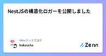
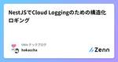

Ubie テックブログのフィード
https://zenn.dev/p/ubie_dev
Ubie株式会社のテックブログです。 採用情報：https://recruit.ubie.life/engineer
フィード

Prismaのテストでデータ削除を高速化する 3
3
Ubie テックブログのフィード
背景ユビーではNode.jsのアプリケーションにおいて、DBのORMにPrismaを採用しています。Prismaに限らず、実際のデータベースを使ったテストにおいてはテストを実行するごとにデータを削除することでテストごとのデータの干渉を防いでテストの安定性を保つという手法が用いられます。今回はPrismaでテスト時にデータ削除するときのパフォーマンス改善の事例について紹介します。今開発しているアプリケーションでは以下のように、DBを用いるテストを実行する前に全てのテーブルを truncateするという素朴な方法でテストDBの掃除を行っていました。import { Prisma, ...
3日前

TypeScript 5.5で型述語を推論できて最高。配列のfilterも型安全に 48
Ubie テックブログのフィード
TypeScriptの次バージョン5.5で、開発者が長い間求めていた挙動が手に入ります。現状のTypeScript （執筆時点で5.4）では、ユーザー定義型ガードを使う際には型述語（用語は後ほど解説します）の記述が必要です。function isNumber(value: number | string): value is number { return typeof value === 'number';}6月リリース予定のTypeScript 5.5では、関数の実体から型述語の型推論（infer type predicates）が可能になります。すなわち、次のようなコー...
7日前

NestJSの構造化ロガーを公開しました 10
Ubie テックブログのフィード
先日以下の記事で書いたNestJSの構造化ロガーを汎用的に使えるかたちにして npm に公開しました。https://zenn.dev/ubie_dev/articles/4f2d5607875589https://github.com/ubie-oss/nslog使い方は普通のNestJSのカスタムロガーと同じでこんな感じで使います。async function bootstrap() { const app = await NestFactory.create(AppModule, { bufferLogs: true }); app.useLogger(new St...
10日前

NestJSでCloud Loggingのための構造化ロギング
Ubie テックブログのフィード
以下の記事で書いたように、ユビーではNestJSを利用したモジュラモノリスなシステムの構築を進めています。https://zenn.dev/ubie_dev/articles/53c5953b037e38その際に得られた知見として今回は構造化ロギングについて紹介します。 やりたいことまず、実現したいのは以下のようなことです。ユビーではGCPのCloud Loggingにログを出力しているため、Cloud Loggingに合わせたかたちでログを出力したいCloud LoggingはJSONによる構造化ログをサポートしている出力するJSONのフィールドはいくつか特別扱いさ...
14日前

「情報アクセシビリティ好事例2023」に応募しました
Ubie テックブログのフィード
「症状検索エンジン ユビー」を総務省が募集している情報アクセシビリティ好事例2023に応募しました。（募集はすでに締め切っています。）https://www.soumu.go.jp/menu_news/s-news/01ryutsu05_02000156.html 情報アクセシビリティ好事例2023「情報アクセシビリティ好事例2023」は、総務省が主導する取り組みで、情報アクセシビリティに配慮したICT機器やサービスを対象とした募集活動です。この取り組みを通じてアクセシブルなICT機器・サービスの普及促進を目的としています。応募には3つの書類が必要です。情報アクセシビリティ...
2ヶ月前
Rebooting Ubie Vitals Design Systems
Ubie テックブログのフィード
デザインシステム Advent Calendar 2023 25日めの記事です。Ubieでデザインエンジニアをしているtakanoripです。この度UbieのデザインシステムであるUbie Vitalsのウェブサイトを公開しました。https://vitals.ubie.life/またUbie Vitalsを構成するUIコンポーネントライブラリであるUbie UIをOSSとして公開しました。（こちらはまだWIP）https://github.com/ubie-oss/ubie-uiウェブサイトやコンポーネントライブラリ公開に至った過程を振り返ります。 Ubie Vita...
2ヶ月前
Ubie Engineering ゆく年くる年 2023
Ubie テックブログのフィード
!この記事は Ubie Engineering Advent Calendar 2023 の25日目です。Ubie の @yohei_kikuta です。この記事は Ubie Engineering Advent Calendar 2023 の締めとして、engineering の観点から 2023 年の状況を振り返り、来年も頑張っていこうという決意を表明するものです。Ubie の engineering 全般に関して整理してお伝えすることはあまりなかったので、2023 の情報をまとめつつ全体像をご紹介しようと思います。 どのようなエンジニアが在籍しているのか？ エンジ...
3ヶ月前
Firebase Authから内製認証基盤に無停止移行して年間1000万円以上削減した
Ubie テックブログのフィード
!この記事は Ubie Engineering Advent Calendar 2023 の23日目です。期末試験が大変で遅れてしまいました。症状検索エンジン「ユビー」 では、ローンチ当初から Firebase Auth (GCP Identity Platform) を使っていましたが、OIDCに準拠した内製の認証認可基盤に移行しました。認証認可基盤そのものは m_mizutani と nerocrux と toshi0607(退職済) が作ってくれたため、僕は移行のみを担当しました。結果として、強制ログアウトなし・無停止でビジネス影響を出さずに、年間1000万円以上のコスト...
3ヶ月前
アルファチャンネルを持つ色のコントラスト比の計算
Ubie テックブログのフィード
こんにちは。Ubieでデザイン、フロントエンド関連のお手伝いをしています、腹筋ローラーの力を信じろです。腹筋しろよ（私は最近してません）。Qiita/アクセシビリティ Advent Calendar 2023の25日目を滑り込み（2日遅れ）で書いていきます。サイトのグレーを定義する場合に、アルファチャンネル（透過度）を設定することがあります。グレーを color や border-color に指定することで、背景色など、他要素との馴染みがよくなります。UbieのデザインシステムであるUbie Vitalsでも、カラーパレットに採用したグレー（ブラック）にはアルファチャンネルを含め...
3ヶ月前
【入社エントリ】Ubie に入社して一ヶ月が経ったよ
Ubie テックブログのフィード
はじめにUbie に入社して1ヶ月が経ちました。あれ、さっき入社したばっかだよな〜？というくらいのスピードで時が流れており、もう一ヶ月が経ったのかという驚きと、いつまでもニューカマー面できないなと少し寂しくもあります。後から見返せるように、この入社直後のアツアツホヤホヤな感情を書き連ねようかなと思います。 今までの経歴は？SIer → スタートアップSWE → Ubie という経歴を歩んできました。前職ではファッションテックな会社で働いており、サービスリニューアルや新規サービスのリリース立ち上げなど、SWEとして色々なことに携わらせてもらっていました。 なぜ Ubie...
3ヶ月前
コンポーネントをアクセシブルに保つ技術
Ubie テックブログのフィード
アクセシビリティ Advent Calendar 2023 21日目の記事です。Ubie株式会社 デザインエンジニアのtakanoripです。Ubieではデザインシステムの1要素としてコンポーネントライブラリの実装を進めています。その中でコンポーネントをアクセシブルに保つための仕組みをいくつか導入しているので紹介します。 Linterまず一番オーソドックスなものとして、アクセシビリティ向けLintツールを導入しています。Ubieではeslint-plugin-jsx-a11yとMarkuplintを導入しています。両者は重複する部分もありますが、eslint-plugin-...
3ヶ月前
共用のQA環境の利用状況を Notion でノーコードで可視化する
Ubie テックブログのフィード
はじめにこんにちは、 syucream です。 Ubie でソフトウェアエンジニアをやっています。ここでは表題の通り、筆者が関わっている Ubie の toC サービス開発の現場において、共用の QA 環境の利用状況をサクッと可視化したエピソードについて触れます。 課題Ubie の toC サービス開発の現場では、現在ソフトウェアエンジニアや QAE が動作確認をする時に共用の QA 環境を用いています。この運用は今までは十分に回っており、共用 QA 環境を用いた動作確認を行う前提でデプロイパイプラインやツールは最適化されてきました。しかしサービスの成長に合わせて開発に...
3ヶ月前
強い開発チームを作るためのコツ〜課題の抽出・可視化・共有のプラクティス〜
Ubie テックブログのフィード
!この記事は Ubie Engineering Advent Calendar 2023 の18日目の記事です。こんにちは。Ubieでソフトウェアエンジニアをやっているtatsuroroです。いきなりですが、チームでサービス開発って難しくないですか？特に不確実性の高い目標を達成しようとした取り組んでいく場合。チームワークの良し悪しによって、得られる成果は大きく違ってきますよね。この記事では、自分がエンジニア兼スクラムマスターとして関わった開発チームにて、課題を抽出・可視化してチームが成長するきっかけを作っていった事例を紹介します。 新チームのミッションは、サービスの回遊...
3ヶ月前
LLMを使って自分の住みたい街を見つけてみた
Ubie テックブログのフィード
はじめにこんにちは、Ubieでアナリティクスエンジニアをやっている@matsu-ryuです。普段は、Ubieが提供する症状検索エンジンを始めとするヘルスケア関連のデータを扱い、「テクノロジーで人々を適切な医療に案内する」ミッション遂行のために、頑張っています。昨今、話題であるLLM（Large language Models：大規模言語モデル）ですが、Ubieの分析業務においても、活用しています。同僚の@masa_kazamaがhttps://note.com/masa_kazama/n/n0f340ab3a3d8でUbieでのLLM活用についてまとめています。今回は、...
3ヶ月前
Ubie のアーキテクチャレビュー運用で得られたもの
Ubie テックブログのフィード
この記事は Ubie Engineering Advent Calendar 2023 の 16 日目の記事です。昨日はohtamanによる「言語モデルはどのようにして知識を蓄えているのか？ 関連文献の紹介 」でした。本日の記事では、 Data Engineer 兼 Backend Engineer として働く私から、Ubieで実施されているアーキテクチャレビューがどのような効果を生んでいるかについて紹介させていただきます！ Ubie でのアーキテクチャレビューUbie では、システムアーキテクチャに変更を加える際にはアーキテクチャレビューの実施をしています。「Design D...
3ヶ月前
MLE が医師と働くってどんなかんじ？~Ubie での症状クラスタリングによる業務効率化の例~
Ubie テックブログのフィード
Ubie で ML Engineer (MLE), Product Owner (PO) をやっているくんぺーです。今日は MLE の人格で記事を書いています。今回は、Ubie で全く異なる専門性を持つ MLE と医師が、ひとつのスクラムのなかでどう協力しあっているか？を紹介します。!Ubie Engineering Advent Calendar 2023 14日目の記事です。Ubie では主力の toC サービスとして 症状検索エンジン ユビー を展開しています。対話的なインタフェースを介していくつかの質問に答えると関連する病名リストを調べられるサービスで、適切な医療サービ...
3ヶ月前
Ubieアクセシビリティ振り返り2023
Ubie テックブログのフィード
こんにちは。Ubie株式会社でデザインエンジニアをしているtakanoripです。今回は2023年のUbieでのアクセシビリティ活動を振り返っていきたいと思います。今年はあまり活動できてないなあと思ったんですが、意外と色々やってました。 障害を持つ方へのユーザビリティテストの実施これは去年の年末から進めていたものですが、課題探索のためのユーザビリティテストを実施しました。視覚障害の方だけでなく、身体に何らかの障害をお持ちの方にインタビューさせていただき、ユビーをより使いやすくするためのヒントを得ることができました。（プライバシーの観点から具体的な内容を書くことは控えます。）アク...
3ヶ月前
プロダクトのスケールを見据えてServer-Driven UIを採用してみる
Ubie テックブログのフィード
この記事はUbie Engineering Advent Calendar 2023の12日目の記事です。よろしくお願いします。 はじめにUbieでソフトウェアエンジニアをやっているisseiです。2021年の3月に入社してから2年程症状検索エンジン「ユビー」の開発をしていましたが、ここ1年くらい新規のプロダクトの検証とそのスケールのための開発をしています。2023年の前半は、新規のプロダクトの検証を出来るだけ素早く行うため、実装範囲を小さくし、バックエンドの実装も最小限にとどめて、ほとんどの機能をフロントのコードで完結させていたのですが、後半は、前半に検証が終えられたプロダク...
4ヶ月前
Ubieのデータ信頼性とその向上の取り組み
Ubie テックブログのフィード
こんにちは。Ubieでアナリティクスエンジニアをやってますおきゆきです。自己紹介ページはこちらです。https://okiyuki.tokyo/この記事は Ubie Engineering Advent Calendar 2023 の11日目の記事です。Ubieは「テクノロジーで人々を適切な医療に案内する」をミッションにしたヘルステックスタートアップで、AIやデータをコア価値とした事業を展開しています。この記事ではそんなUbieで行っているデータ信頼性の取り組みについて紹介します。データ信頼性は新しい概念なこともあり、我々も日々手探りで進めている中での事例を紹介できればと思います。...
4ヶ月前
仮説検証フェーズのWebプロダクトの開発を生成AIで加速する
Ubie テックブログのフィード
この記事はUbie株式会社のUbie Engineering Advent Calendar 2023 10日目の投稿です。https://adventar.org/calendars/9416 はじめに現在私はUbieにて新規Webプロダクトの立ち上げメンバーとして仕事をしていて、日々プロダクトの価値を生み出すための仮説検証を行っています。このフェーズではとにかくスピーディにユーザーが触ることができるUIを用意してフィードバックを得ることが大切ですが、ChatGPTのような生成AIの爆発的な発展によって、そのスピードをより上げることができるようになっています。本記事では私が行...
4ヶ月前